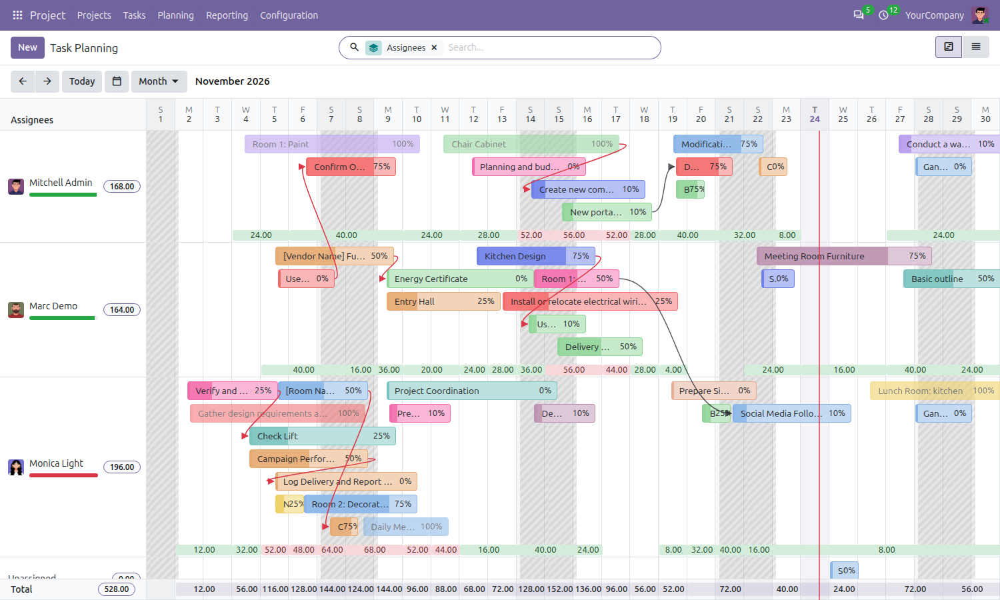
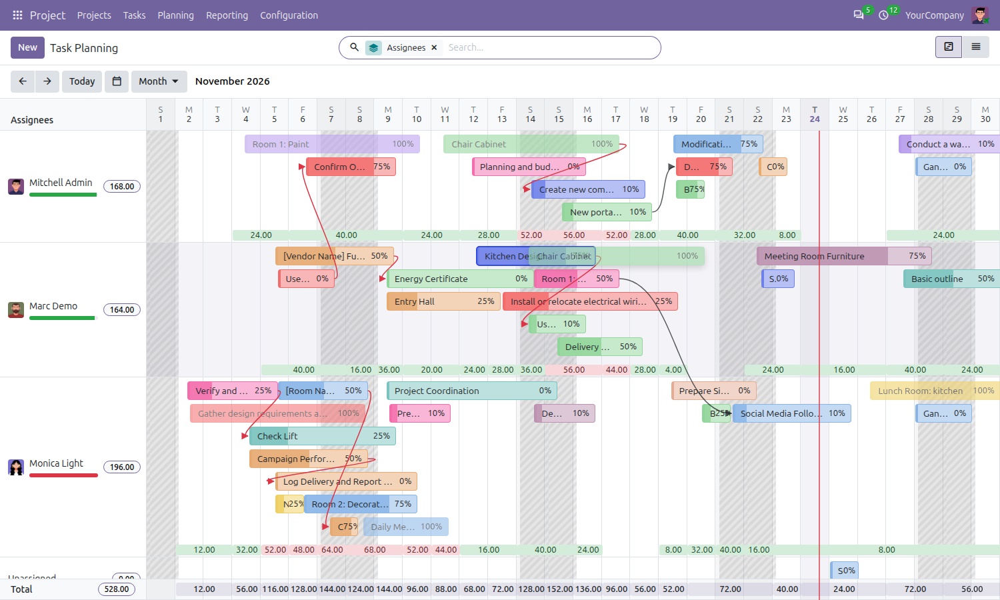
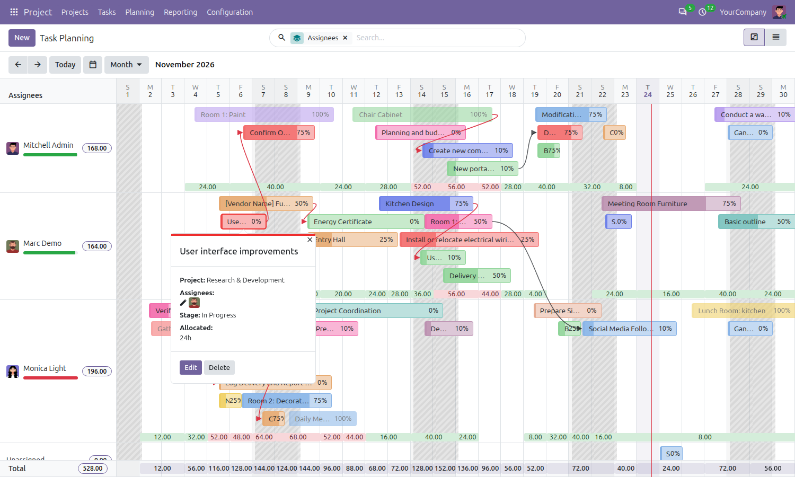
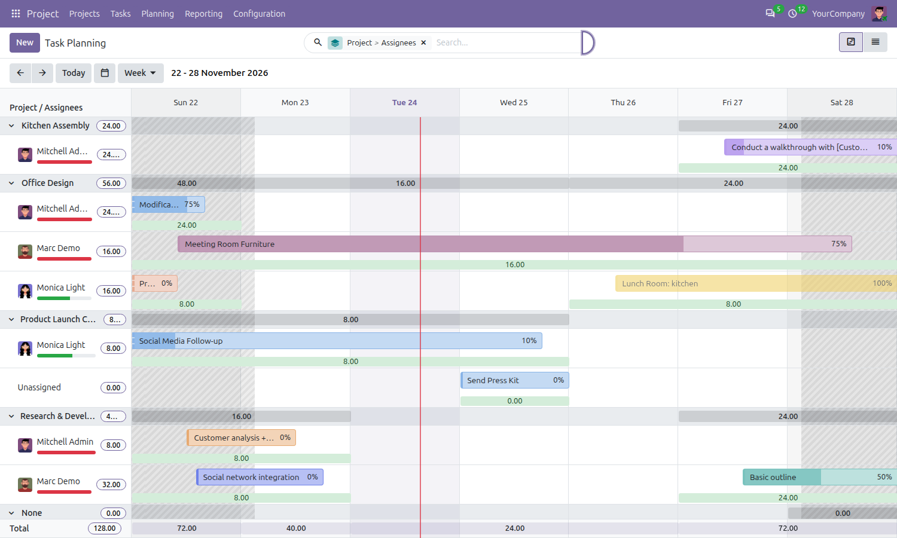
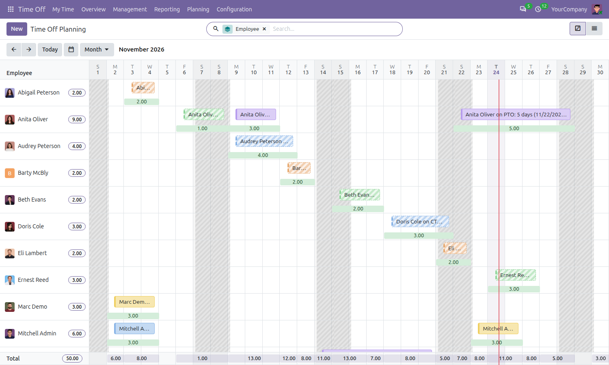
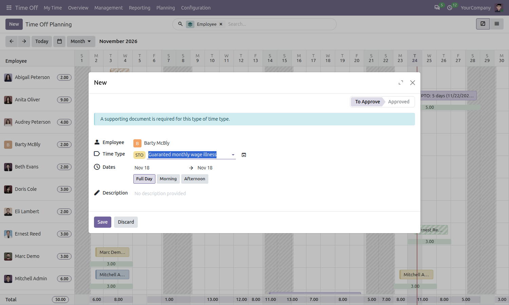
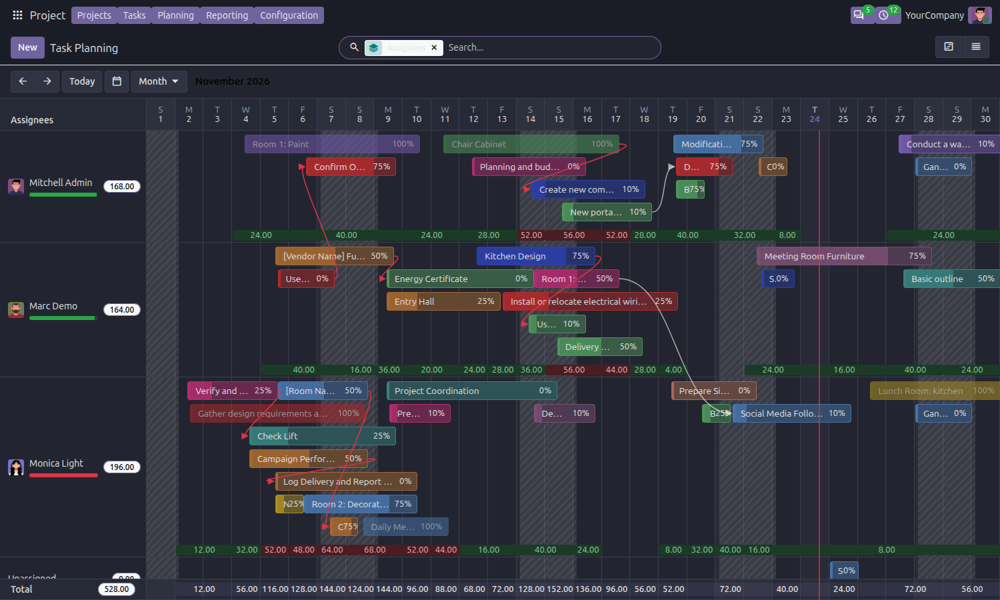

A timeline view for any model of Odoo Community: records grouped in rows, moved and resized with the mouse. The base for planning, rental, field service and project apps.

Add a <gantt> view to a model and an action: the view switcher gets a timeline next to the list, kanban and calendar views.
These views were added to Project and Time Off by a small test module: this app itself ships no view on other apps.






Other modules use it as a base and only describe their view and hooks.
The README of the module lists every attribute.
<record id="project_task_view_gantt" model="ir.ui.view">
<field name="model">project.task</field>
<field name="arch" type="xml">
<gantt date_start="planned_date_begin" date_stop="date_deadline"
default_scale="week" default_group_by="user_ids"
color="color" progress="progress"
consolidation="allocated_hours" consolidation_max="{'user_ids': 8}"
dependency_field="depend_on_ids" total_row="1"
decoration-striped="state == 'draft'">
<templates>
<t t-name="gantt-popover">
<field name="project_id"/>
</t>
</templates>
</gantt>
</field>
</record>
gantt_unavailability() returns the unavailable periods of each row: weekends, leaves, closing days._gantt_progress_bar() returns a value and a maximum per row for the bar in its header.js_class./opt/odoo/custom-addons, and add that folder to addons_path in odoo.conf.Gantt View is free and open source under LGPL-3, for the Odoo 20 Community Edition. No subscription, no limit on users or records.
FreeYour rating helps others find it; your requests and pull requests decide what comes next.
★ Rate us on Odoo Apps 💬 Send feedback 🐛 Report an issue